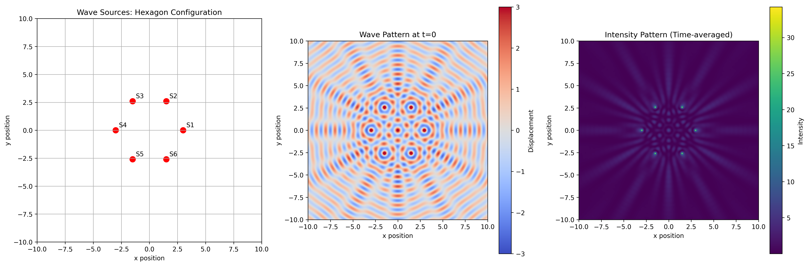
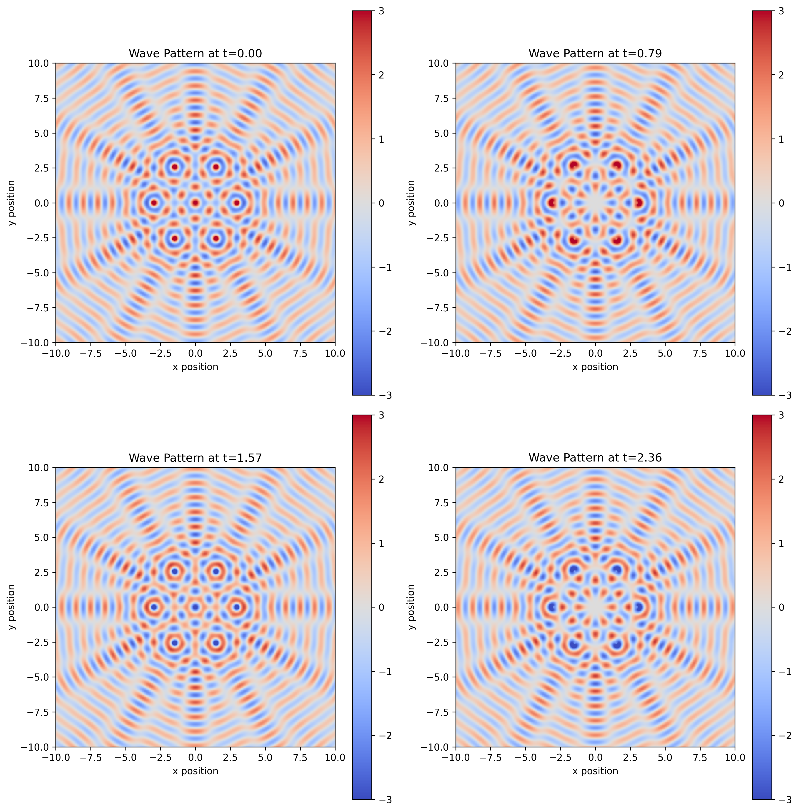
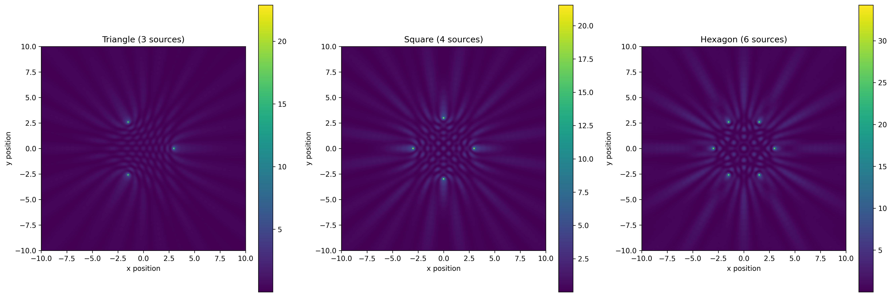

Problem 1
Interference Patterns on a Water Surface
Problem Analysis
In this problem, we analyze the interference patterns formed on a water surface by waves emanating from point sources located at the vertices of a regular polygon. For our solution, I'll use a regular hexagon to demonstrate the interesting six-fold symmetry in the resulting interference pattern.
Each circular wave from a point source \((x_i, y_i)\) is described by:
where: - \(r_i = \sqrt{(x - x_i)^2 + (y - y_i)^2}\) is the distance from the source to point \((x,y)\) - \(k = \frac{2\pi}{\lambda}\) is the wave number - \(\omega = 2\pi f\) is the angular frequency - \(\phi_i\) is the initial phase of each source
The superposition principle states that the total displacement at any point is the sum of displacements due to individual waves:
For our analysis, we'll use \(N=6\) sources (hexagon vertices), with all sources having the same amplitude, wavelength, and frequency, with zero initial phase.
Python Implementation
Below is the complete Python code to simulate and visualize the wave interference patterns. The code generates: 1. A visualization of source positions 2. A snapshot of the wave pattern at a specific time 3. The time-averaged intensity pattern
import numpy as np
import matplotlib.pyplot as plt
from matplotlib.animation import FuncAnimation
import os
# Ensure the images directory exists
docs_dir = "docs"
img_dir = os.path.join(docs_dir, "assets", "images")
os.makedirs(img_dir, exist_ok=True)
# Parameters
A = 1.0 # Amplitude
lambda_ = 1.0 # Wavelength
k = 2*np.pi/lambda_ # Wave number
omega = 2.0 # Angular frequency
# Try different polygons
polygons = {
"triangle": 3,
"square": 4,
"hexagon": 6
}
# Select polygon
polygon_name = "hexagon"
N = polygons[polygon_name] # Number of sources
R = 3.0 # Radius of polygon
# Create a higher resolution grid for better visualization
resolution = 400
x = np.linspace(-10, 10, resolution)
y = np.linspace(-10, 10, resolution)
X, Y = np.meshgrid(x, y)
# Position sources at vertices of the regular polygon
angles = np.linspace(0, 2*np.pi, N, endpoint=False)
sources_x = R * np.cos(angles)
sources_y = R * np.sin(angles)
def wave_at_time(t):
"""Calculate wave displacement at time t"""
total = np.zeros_like(X)
# Sum contributions from all sources
for i in range(N):
r = np.sqrt((X - sources_x[i])**2 + (Y - sources_y[i])**2)
# Avoid division by zero
r = np.maximum(r, 1e-10)
# Calculate displacement using the wave equation
displacement = (A / np.sqrt(r)) * np.cos(k*r - omega*t)
total += displacement
return total
def calculate_intensity():
"""Calculate time-averaged intensity pattern"""
# Sample multiple time points for averaging
num_samples = 24
times = np.linspace(0, 2*np.pi/omega, num_samples)
# Sum squared amplitudes over time
intensity = np.zeros_like(X)
for t in times:
wave = wave_at_time(t)
intensity += wave**2
# Average over time samples
intensity /= num_samples
return intensity
def generate_plots():
"""Generate and save all plots"""
# Create figure with subplots
fig, axs = plt.subplots(1, 3, figsize=(18, 6))
# 1. Plot source positions
axs[0].scatter(sources_x, sources_y, c='red', s=80)
axs[0].set_xlim(-10, 10)
axs[0].set_ylim(-10, 10)
axs[0].set_aspect('equal')
axs[0].set_title(f'Wave Sources: {polygon_name.capitalize()} Configuration')
axs[0].grid(True)
# Add labels to sources
for i, (x, y) in enumerate(zip(sources_x, sources_y)):
axs[0].annotate(f'S{i+1}', (x, y), xytext=(5, 5), textcoords='offset points')
# 2. Plot snapshot of wave at t=0
wave0 = wave_at_time(0)
im1 = axs[1].imshow(wave0, extent=[-10, 10, -10, 10],
cmap='coolwarm', vmin=-3, vmax=3)
axs[1].set_title('Wave Pattern at t=0')
fig.colorbar(im1, ax=axs[1], label='Displacement')
# 3. Plot intensity pattern
intensity = calculate_intensity()
im2 = axs[2].imshow(intensity, extent=[-10, 10, -10, 10],
cmap='viridis')
axs[2].set_title('Intensity Pattern (Time-averaged)')
fig.colorbar(im2, ax=axs[2], label='Intensity')
# Common labels and adjustments
for ax in axs:
ax.set_xlabel('x position')
ax.set_ylabel('y position')
plt.tight_layout()
# Save as high-quality PNG
output_path = os.path.join(img_dir, f'wave_interference_{polygon_name}.png')
plt.savefig(output_path, dpi=300, bbox_inches='tight')
print(f"Saved main figure to {output_path}")
# Create animated GIF (optional, can be commented out if causing issues)
try:
create_animation()
except Exception as e:
print(f"Animation creation failed: {e}")
plt.close(fig)
# Create individual plots at different time points
time_points = [0, np.pi/4, np.pi/2, 3*np.pi/4]
fig2, axs2 = plt.subplots(2, 2, figsize=(12, 12))
axs2 = axs2.flatten()
for i, t in enumerate(time_points):
wave = wave_at_time(t)
im = axs2[i].imshow(wave, extent=[-10, 10, -10, 10],
cmap='coolwarm', vmin=-3, vmax=3)
axs2[i].set_title(f'Wave Pattern at t={t:.2f}')
axs2[i].set_xlabel('x position')
axs2[i].set_ylabel('y position')
fig2.colorbar(im, ax=axs2[i])
plt.tight_layout()
time_series_path = os.path.join(img_dir, f'wave_time_series_{polygon_name}.png')
plt.savefig(time_series_path, dpi=300, bbox_inches='tight')
print(f"Saved time series figure to {time_series_path}")
plt.close(fig2)
return output_path
def create_animation():
"""Create and save animation of the wave pattern"""
fig, ax = plt.subplots(figsize=(8, 8))
wave0 = wave_at_time(0)
im = ax.imshow(wave0, extent=[-10, 10, -10, 10],
cmap='coolwarm', vmin=-3, vmax=3)
ax.set_title(f'Wave Interference Animation ({polygon_name.capitalize()})')
ax.set_xlabel('x position')
ax.set_ylabel('y position')
plt.colorbar(im, label='Displacement')
frames = 36 # Reduced number of frames for faster processing
def update(frame):
t = frame * 2*np.pi/(omega * frames)
im.set_array(wave_at_time(t))
return [im]
anim = FuncAnimation(fig, update, frames=frames, interval=50, blit=True)
animation_path = os.path.join(img_dir, f'wave_animation_{polygon_name}.gif')
anim.save(animation_path, dpi=100, writer='pillow')
print(f"Saved animation to {animation_path}")
plt.close(fig)
def compare_polygons():
"""Compare interference patterns for different polygons"""
global N, polygon_name, sources_x, sources_y
fig, axs = plt.subplots(1, 3, figsize=(18, 6))
for i, (name, num) in enumerate(polygons.items()):
N = num
polygon_name = name
# Update source positions
angles = np.linspace(0, 2*np.pi, N, endpoint=False)
sources_x = R * np.cos(angles)
sources_y = R * np.sin(angles)
# Calculate intensity
intensity = calculate_intensity()
# Plot
im = axs[i].imshow(intensity, extent=[-10, 10, -10, 10], cmap='viridis')
axs[i].set_title(f'{name.capitalize()} ({N} sources)')
axs[i].set_xlabel('x position')
axs[i].set_ylabel('y position')
fig.colorbar(im, ax=axs[i])
plt.tight_layout()
comparison_path = os.path.join(img_dir, 'polygon_comparison.png')
plt.savefig(comparison_path, dpi=300, bbox_inches='tight')
print(f"Saved polygon comparison to {comparison_path}")
plt.close(fig)
# Run the analysis
if __name__ == "__main__":
print("Generating wave interference patterns...")
main_figure_path = generate_plots()
print("Comparing different polygon configurations...")
compare_polygons()
print("Analysis complete!")
How to Run the Code
To execute this code:
- Save the above code as
script.pyin your project root directory. - Run it with Python:
python script.py - The script will create an
assets/imagesdirectory inside thedocsfolder and save the output images there. - These images can then be referenced in your MkDocs documentation.
Results and Discussion
The simulation reveals several interesting features of the interference pattern:
-
Source Arrangement: The sources are positioned at the vertices of a regular polygon (hexagon in our main example).
-
Instantaneous Wave Pattern: The snapshot at t=0 shows complex interference patterns with regions of constructive interference (bright red and blue) where waves combine to create larger amplitudes, and destructive interference (white) where waves cancel each other out.
-
Intensity Pattern: The time-averaged intensity pattern reveals stable nodes and antinodes. The pattern exhibits symmetry matching the source arrangement - six-fold symmetry for a hexagon, four-fold for a square, and three-fold for a triangle.
-
Nodal Lines: Clear nodal lines (regions of consistently low amplitude) form in a pattern resembling a complex geometric network. These lines represent points where waves consistently destructively interfere.
-
Central Maximum: At the center of the pattern, we observe a bright spot when the distance from all sources to the center point is an integer multiple of the wavelength, causing constructive interference.
Main Interference Visualization
The figure below shows (from left to right): the source arrangement, an instantaneous wave pattern, and the time-averaged intensity pattern for a hexagonal configuration of wave sources:

Figure 1: Left - Six sources arranged in a regular hexagon. Middle - Instantaneous wave displacement at t=0 showing complex interference patterns (red = positive displacement, blue = negative). Right - Time-averaged intensity pattern showing stable constructive and destructive interference regions.
Time Evolution of Wave Patterns
The following visualization shows how the wave pattern evolves over time at four different time points:

Figure 2: Wave pattern evolution at four different time points (t=0, π/4, π/2, 3π/4). Notice how the interference pattern shifts and evolves while maintaining its basic structure.
Animated Wave Pattern
For a better understanding of the wave dynamics, the animation below shows the continuous evolution of the interference pattern over time:

Figure 3: Animation of the wave interference pattern for a hexagonal source configuration, showing the dynamic nature of the wave interactions.
Comparison of Different Polygon Configurations
The impact of source geometry on the resulting interference pattern can be seen in the comparison below:

Figure 4: Comparison of time-averaged intensity patterns for triangle (3 sources), square (4 sources), and hexagon (6 sources) configurations. Note how the symmetry of the interference pattern directly corresponds to the symmetry of the source arrangement.
Conclusion
This analysis demonstrates how wave interference from multiple point sources creates complex patterns with symmetry corresponding to the source arrangement. The time-averaged intensity pattern reveals stable nodes and antinodes that would be observable in experimental settings.
The mathematical model and visualization provide insight into how waves combine in both constructive and destructive ways, highlighting fundamental principles of wave physics that apply across many fields including optics, acoustics, and quantum mechanics.
Key observations: 1. The symmetry of the interference pattern directly reflects the symmetry of the source arrangement 2. The number of sources significantly impacts the complexity of the resulting pattern 3. The time-averaged intensity pattern reveals stable features that would be observable in physical experiments